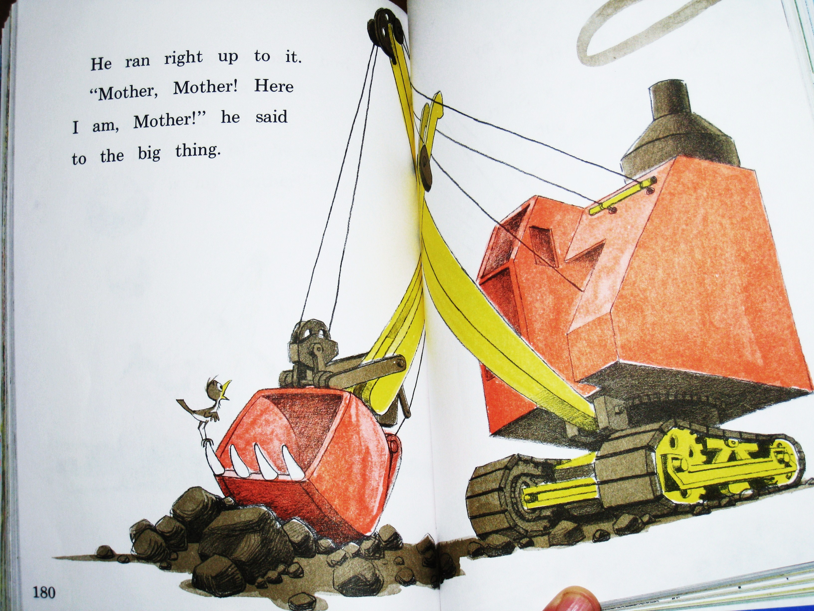
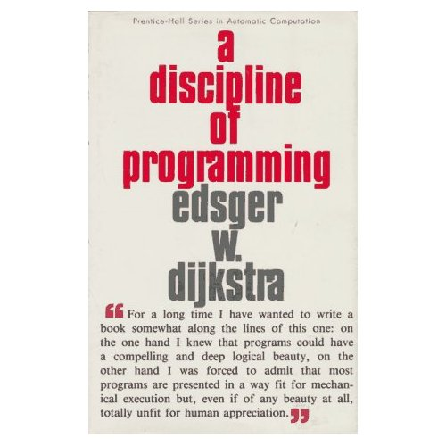
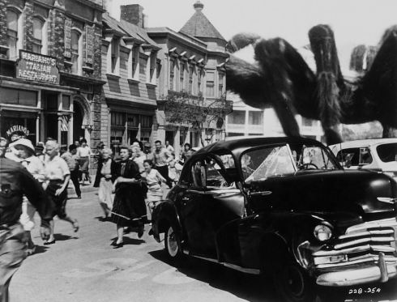

Understanding
Understanding should be easy
Understanding is hard
When a program runs, we observe its external behaviors and construct narratives to explain our observations.


The state space of a single variable is a finite list of all values the variable can have. A program’s “total state space is regarded as the Cartesian product of the state spaces” of all its variables.
0 1 2 3 4 5 6 7 8 9 10 11 12 13 14 15 16 17 18 19 20 21 22 23 24 25 26 27 28 29 30 31 32 33 34 35 36 37 38 39 40 41 42 43 44 45 46 47 48 49 50 51 52 53 54 55 56 57 58 59 60 61 62 63
This state space is a lot like the set of natural numbers
0 -> 1 -> 2 -> 3 -> … -> 0xFFFFFFFF
0 <-> 1 <-> 2 <-> 3 <-> … <-> 0xFFFFFFFF
0 <-> 1 <-> 2 <-> 3 <-> … <-> 0xFFFFFFFF <-> 0
0 <-> 1 <-> 2 <-> 3 <-> … <-> ∞
0000 <-> 0001 <-> 0010 <-> 0011 <-> … <-> 0xFFFFFFFF <-> 0000
1 + 2 = 3
0.1 + 0.2 = 0.30000000000000004
As long as we reason about our programs using abstract types which have different properties than the real types we use to implement them, life will continue to be hard.
“… Let’s see, then, whether there is, in the realm of the ideal, some necessary, obvious, simple quality that can serve as a type.” — Stéphane Mallarmé
public abstract class Point2D
extends Object
implements Cloneable
The Point2D class defines a point representing a location in (x,y) coordinate space.
While writing code, we represent our reasoning about the code in the way we factor functions and model data. Often we use very literally denotative types to structure our code in an attempt to raise the level of the abstraction, to reinforce through human language the semantics we hope to create in the machine.
Types are provided as an abstraction because they precisely embody the yearning to compose more sophisticated and articulate state machines from the primordial and idiosyncratic state machines provided to us by necessity.
Dijkstra observes about programs of multiple variables that “when we construct a state space by forming a Cartesian product, it is by no means certain that we shall have a good use for all its points.”
0 <-> 1 <-> 2 <-> 3 <-> … <-> 0xFFFFFFFF <-> 0
0 <-> 1 <-> 2 <-> 3 <-> … <-> 0xFFFFFFFF <-> 0
0 <-> 1 <-> 2 <-> 3 <-> … <-> 0xFFFFFFFF <-> 0
0 <-> 1 <-> 2 <-> 3 <-> … <-> 0xFFFFFFFF <-> 0
0 <-> 1 <-> 2 <-> 3 <-> … <-> 0xFFFFFFFF <-> 0
0 <-> 1 <-> 2 <-> 3 <-> … <-> 0xFFFFFFFF <-> 0
0 <-> 1 <-> 2 <-> 3 <-> … <-> 0xFFFFFFFF <-> 0
Correctness
"If you haven't tested it, you don't know it works. You only hope it works."
If you write some new code and break a pre-existing test, do you change the old test, or change your code?
Human intent
Documentation, advice, rumors, slogans, and dogma abstract over computer programs. Programs abstract over the interactions of their complex types. Complex types abstract over primitive types. Primitive types abstract over far more primitive types, which the hardware provides to abstract over itself.
Even software which is well-written is not well understood.
Every layer of abstraction must be perfect.

Questions?